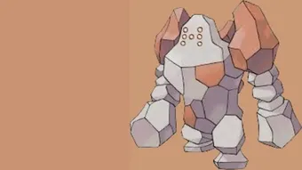

Quick facts
Species: Regirock (Legendary)
Types: Rock
Primary weaknesses: Fighting, Ground, Steel, Water, Grass
Recommended lobby: 3–7 trainers
This guide is created for educational and informational purposes to help Pokémon GO players understand raid mechanics and improve gameplay strategy.
Regirock is a Rock-type Legendary Raid Boss in Pokémon GO. It has a few key weaknesses, making it possible for well-prepared trainers to defeat it efficiently. This guide covers the best counters, weaknesses, movesets, catch CP ranges, weather boosts, shiny availability, and raid strategies.
Raid Boss: Regirock
Type: Rock
Raid Tier: Legendary Raid
Major Weakness: Water, Grass, Fighting, Ground, Steel

Regirock is one of the Legendary titans available in Pokémon GO raids. As a pure Rock-type, it has several vulnerabilities, particularly to Water, Grass, Fighting, Ground, and Steel moves. Trainers can exploit these weaknesses to defeat it more quickly and safely.
This guide is designed for trainers of all experience levels. Whether you’re preparing a large group or a duo raid, you’ll find information about the best counters, optimal strategies, CP ranges, and tips for maximizing rewards.
| Category | Details |
|---|---|
| Weak to |
 Fighting • Fighting •
 Ground • Ground •
 Steel • Steel •
 Water • Water •
 Grass Grass
|
| Resists to |
 Normal • Normal •
 Flying • Flying •
 Poison • Poison •
 Fire Fire
|
Recommended Megas to use against Regirock:
Large teams can brute-force through, but solo or duo attempts require precise dodging and strategic use of charged moves. Its resistances to Normal and Flying mean your counters need careful selection.
Regular pokemon that amplify the right types give you a powerful edge. Below are top Regular counters with short notes on why they excel.
| Pokémon | Fast Moves | Charged Moves | Elite Moves | Best Moves |
|---|---|---|---|---|
| Zamazenta | Metal Claw / Ice Fang | Moon Blast / Close Combat / Giga Impact / Behemoth Bash | - | Ice Fang (12) and Giga Impact (200) |
| Dusk Mane Necrozma | Shadow Claw / Metal Claw / Psycho Cut | Dark Pulse / Iron Head / Future Sight / Outrage / Sunsteel Strike | - | Shadow Claw / Metal Claw (6) and Sunsteel Strike (230) |
| Zacian | Metal Claw / Air Slash | Play Rough / Close Combat / Giga Impact / Behemoth Blade | - | Air Slash (12) and Giga Impact / Behemoth Blade (200) |
| Primal Groudon | Mud Shot / Dragon Tail | Earthquake / Fire Blast / Solar Beam | Precipice Blades / Fire Punch | Dragon Tail (14) and Solar Beam (180) |
| Keldeo(Resolute) | Low Kick / Poison Jab | Close Combat / Sacred Sword / X-Scissor / Aqua Jet / Hydro Pump | - | Poison Jab (13) and Hydro Pump (135) |
| Primal Kyogre | Waterfall | Hydro Pump / Surf / Thunder / Blizzard / Avalanche | Origin Pulse | Waterfall (13) and Hydro Pump (135) |
| Landorus | Mud Shot / Extrasensory | Superpower / Earthquake / Bulldoze / Stone Edge | Sandsear Storm | Extrasensory (11) and Sandsear Storm (150) |
| Terrakion | Double Kick / Smack Down / Zen Headbutt | Close Combat / Earthquake / Rock Slide | Sacred Sword | Smack Down (13) and Earthquake (140) |
| Kartana | Air Slash / Fury Cutter / Razor Leaf | Sacred Sword / Aerial Ace / X-Scissor / Leaf Blade / Night Slash | - | Razor Leaf (13) and Leaf Blade (70) |
Shadow pokemon that amplify the right types give you a powerful edge. Below are top Shadow counters with short notes on why they excel.
| Pokémon | Fast Moves | Charged Moves | Elite Moves | Best Moves |
|---|---|---|---|---|
| Shadow Metagross | Fury Cutter / Bullet Punch / Zen Headbutt | Earthquake / Flash Cannon / Psychic | Shadow Claw / Meteor Mash | Zen Headbutt (11) and Earthquake (140) |
| Shadow Groudon | Mud Shot / Dragon Tail | Earthquake / Fire Blast / Solar Beam | Precipice Blades / Fire Punch | Dragon Tail (14) and Solar Beam (180) |
| Shadow Garchomp | Mud Shot / Dragon Tail | Earthquake / Sand Tomb / Fire Blast / Outrage / Breaking Swipe | Earth Power | Dragon Tail (14) and Fire Blast / Earthquake(140) |
| Shadow Conkeldurr | Counter / Poison Jab | Dynamic Punch / Focus Blast / Stone Edge | Brutal Swing | Counter / Poison Jab (13) and Focus Blast (140) |
| Shadow Kyogre | Waterfall | Hydro Pump / Surf / Thunder / Blizzard | Origin Pulse | Waterfall (13) and Hydro Pump (135) |
| Shadow Blaziken | Counter / Fire Spin / Ember | Focus Blast / Aura Sphere / Brave Bird / Overheat / Blaze Kick | Stone Edge / Blast Burn | Counter / Fire Spin (13) and Overheat (160) |
| Shadow Dialga | Metal Claw / Dragon Breath | Iron Head / Thunder / Draco Meteor | - | Metal Claw / Dragon Breath (6) and Draco Meteor (150) |
| Shadow Excadrill | Mud Slap / Mud Shot / Metal Claw | Earthquake / Drill Run / Scorching Sands / Rock Slide / Iron Head | - | Mud Slap (19) and Earthquake (140) |
| Shadow Latios | Zen Headbutt / Dragon Breath | Aura Sphere / Solar Beam / Psychic / Dragon Claw | Luster Purge | Zen Headbutt (11) and Solar Beam (180) |
| Shadow Machamp | Counter / Bullet Punch | Dynamic Punch / Close Combat / Cross Chop / Rock Slide / Heavy Slam | Karate Chop / Submission / Stone Edge / Payback | Counter (13) and Close Combat / Stone Edge (105) |
Mega pokemon that amplify the right types give you a powerful edge. Below are top Mega counters with short notes on why they excel.
| Pokémon | Fast Moves | Charged Moves | Elite Moves | Best Moves |
|---|---|---|---|---|
| Mega Alakazam | Psycho Cut / Confusion | Focus Blast / Shadow Ball / Fire Punch / Future Sight | Counter / Psychic / Dazzling Gleam | Confusion (19) and Focus Blast (140) |
| Mega Venusaur | Razor Leaf / Vine Whip | Sludge / Sludge Bomb / Petal Blizzard / Solar Beam | Frenzy Plant | Razor Leaf (13) and Solar Beam (180) |
| Mega Blastoise | Rollout / Water Gun / Bite | Skull Bash / Flash Cannon / Hydro Pump / Ice Beam | Hydro Cannon | Rollout (15) and Hydro Pump (135) |
| Mega Latios | Zen Headbutt / Dragon Breath | Aura Sphere / Solar Beam / Psychic / Dragon Claw | Luster Purge | Zen Headbutt (11) and Solar Beam (180) |
| Mega Swampert | Mud Shot / Water Gun | Sludge Wave / Sludge / Earthquake / Surf / Muddy Water | Hydro Cannon | Water Gun (5) and Earthquake (140) |
| Mega Heracross | Counter / Struggle Bug | Close Combat / Upper Hand / Earthquake / Rock Blast / Megahorn | - | Struggle Bug (15) and Earthquake (140) |
| Mega Metagross | Fury Cutter / Bullet Punch / Zen Headbutt | Earthquake / Flash Cannon / Psychic | Shadow Claw / Meteor Mash | Zen Headbutt (11) and Earthquake (140) |
| Mega Garchomp | Mud Shot / Dragon Tail | Earthquake / Sand Tomb / Fire Blast / Outrage / Breaking Swipe | Earth Power | Dragon Tail (14) and Fire Blast / Earthquake(140) |
| Mega Sceptile | Fury Cutter / Bullet Seed | Aerial Ace / Earthquake / Leaf Blade / Dragon Claw / Breaking Swipe | Frenzy Plant | Bullet Seed (7) and Earthquake (140) |
| Mega Lucario | Counter / Bullet Punch | Close Combat / Power-Up Punch / Aura Sphere / Shadow Ball / Flash Cannon / Meteor Mash / Blaze Kick / Thunder Punch | Force Palm | Counter (13) and Close Combat (105) |
| Mega Blaziken | Counter / Fire Spin / Ember | Focus Blast / Aura Sphere / Brave Bird / Overheat / Blaze Kick | Stone Edge / Blast Burn | Counter / Fire Spin (13) and Overheat (160) |
Regirock common fast moves are Lock On or Rock Smash or Rock Throw. Charged moves include Focus Blast or Stone Edge and Zap Cannon. Elite moves include Earthquake.
Stone Edge and Superpower are the most dangerous charged moves, capable of dealing heavy damage quickly. Dodging them can significantly improve your chances of survival in smaller raid groups.
Key threats: Focus Blast and Earthquake hit hard and can knock out fragile counters quickly, so use bulkier counters or dodge these charged moves when possible.
A strong Regirock raid team should include:
Mega Pokémon like Mega Blaziken or Mega Lucario can reduce the number of trainers needed for a fast clear.
Regirock is boosted in Sunny and Windy weather, increasing its attack power.
Your counters are boosted in:
With good counters and weather boosts (e.g., Cloudy for Fighting, Rainy for Water), 3–5 high-level trainers can often take down Regirock, but 4+ will make it much more comfortable.
Regirock is useful for completing the Legendary collection and provides strong Rock-type coverage for PvP. Exploiting its weaknesses allows for a smooth raid experience.
Regirock can appear in its Shiny form after you defeat the raid. The shiny version has a slightly lighter, more orange-toned coloration compared to the regular Regirock.
While shiny Regirock is rare, participating in multiple raids increases your chance of encountering one. Collectors often aim to catch both regular and shiny versions for their Pokédex.
Yes! Shiny Regirock is available during specific events and raid rotations.
Regirock can use moves like Stone Edge, Rock Slide, and Earth Power, dealing massive Rock and Ground-type damage to opponents.
With very high defense but moderate attack, Regirock can be challenging. Using type-advantage Pokémon ensures efficient battles.
Its pure Rock typing, legendary status, and strong defensive stats make Regirock visually striking and strategically valuable in Max Raid Battles.
Its high attack, strong resistances, and Meteor Mash make it a top-tier raid and PvP option.
Regirock is a tanky Rock-type raid boss, but with a Fighting-heavy team and optional Ground/Steel backup, it can be defeated efficiently. Mega Pokémon can speed up the raid and ensure victory.